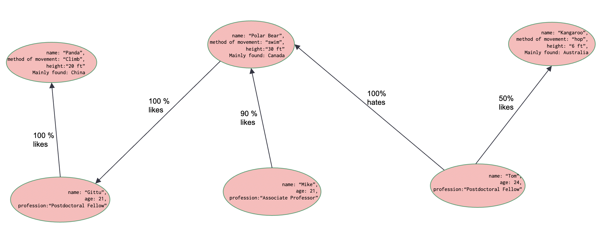
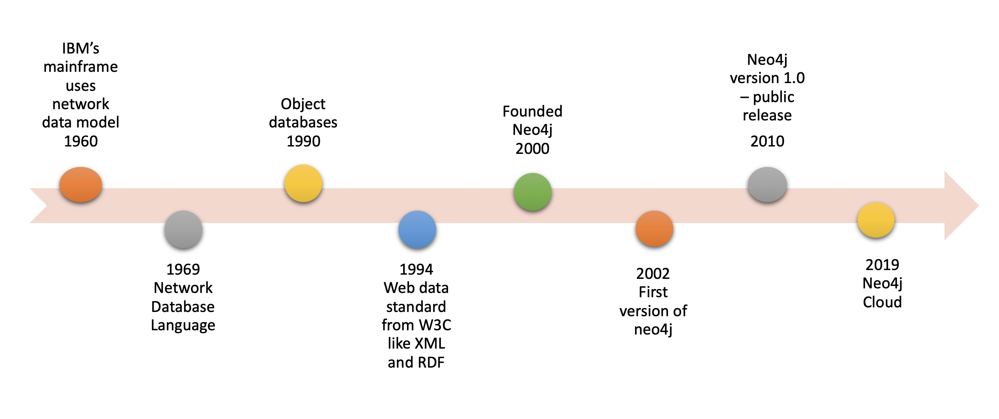
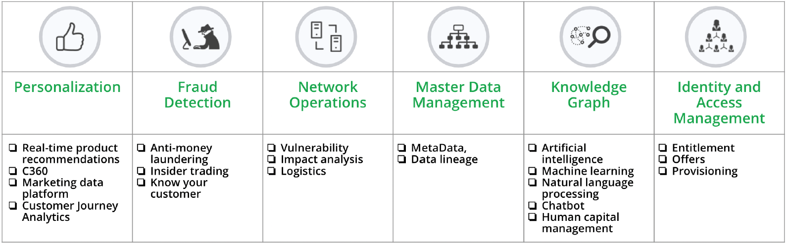
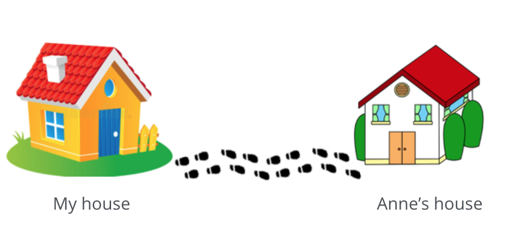
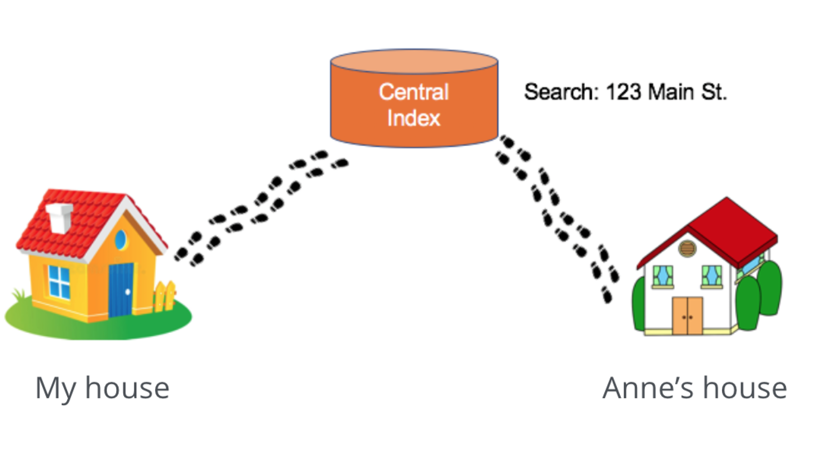
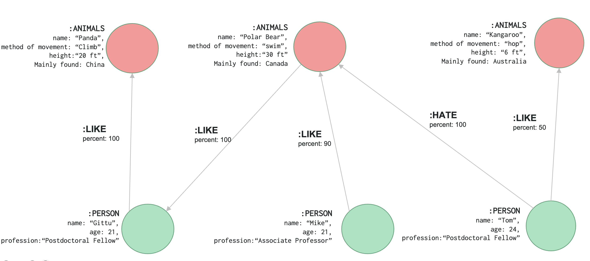
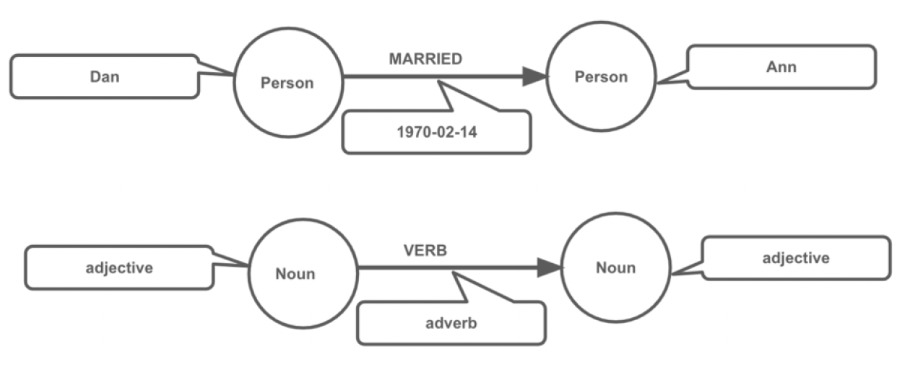

Lecture 5: Beyond RDBMS#
Gittu George, January 17 2023
Attribution: This notebook is developed using some materials provided by neo4j.
Announcements#
Late submissions won’t be accepted even for partial credits.
Internet was not working when you tried to upload it at 11:45 PM is not an excuse. You are responsible for uploading it earlier so that situations like this don’t happen.
You are allowed to make multiple submission
RHL provided date and time for the final exam - Tuesday, Feb 7th 1:00PM – 2:30PM
Check for the upcoming deadlines with assignments - We won’t be able to provide you an extension.
Todays Agenda#
Where are we with RDBMS?
Advantages & Disadvantages of RDBMS
What is NoSQL?
Different types of NoSQL?
Introduction to graph database
Understanding the graph model
Setting up and connecting to graph database
Class Activity:
Learning objectives#
Understand (traditional) limitations of RDBMS
Understand the main forms of NoSQL/non-relational databases
Examine some potential solutions
Introduce Graph Databases
Understanding graph model
Where are we with RDBMS? (halfway check)#
We talked about Big Data generally and issues with data specifically
We talked about cloud computing and set up an RDS instance in the cloud.
We talked about how to connect to a database through Jupyter (or essentially from anywhere using the ODBC drivers)
We used the connection to query data and plot it using interactive figures
We added appropriate indexes to the data where necessary to (ostensibly) speed up data queries
We de-normalized to support broader data access and built a mini-warehouse
Story Time (Justin Beiber problem)#
We want the right tool for the job. So far, we’ve used RDBMS appropriately by normalizing it, using indexes wherever needed & denormalizing it for analytical and dashboard purposes. Postgres or any other database ( like MySQL, Oracle, and SQL Server) can support very large operations. Instagram, IMDB, Skype, and others use Postgres for business-critical services. But, SQL is not suited to all analyses. Here is what happened with Instagram - how Justin Beiber’s popularity could destroy the entire infrastructure.
Even around 2013, Instagram already had a pretty big infrastructure, and they used to use Postgres as their database. Everything was going well until Justin Beiber got into Instagram. He was one of the first high-profile people to get on Instagram. When he would post something, people would comment and like him so much. But people around the globe are doing it simultaneously that it is hitting servers so fast that people can’t see their likes or comments, or it took a long time for that to get updated as a result of locking tables. After so much debugging to this issue, Instagram decided to move to a hybrid system with Amazon Cassandra and Postgres.
The takeaway message from this story is that even though they had a big infrastructure on Postgres, no other techniques really worked out to solve this problem. And they want to rely on a hybrid solution ( Postgres and Cassandra) to this problem. Most data systems are hybrid in the era we are in; you will experience this when you start working in the industry.
Advantages of RDBMS#
Uses a (semi) standard language (SQL) across all platforms.
Uses ACID principles
Atomic Transactions
Consistent data representation
Independent Transactions
Durable Data
Highly optimized query planner (EXPLAIN ANALYZE)
Disadvantages of RDBMS#
Write times and table locks reduce efficiency
Particularly when the upsert level is high (UPDATE & INSERT)
Some data has complex models
Some data may be “sparse” in a normalized format
Documents & keys may not be suited to an RDBMS
Scaling difficulties
What is NoSQL?#
NoSQL (Not (Only) SQL) was there for quite a while now. It was first introduced in 1998 by Carlo Strozzi’s to call his lightweight, relational database that did not follow the standard SQL interface, and hence NoSQL. Later in 2000, this got popular as hashtag #NoSQL to discuss the advancement in the non-relational database world. It’s a trendy buzzword these days.
Main Goals of NoSQL#
Reduce the dependence on fixed data schema.
Reduce the dependence on a single point of truth.
Scaling!
NoSQL Strengths#
(semi) Schema-free
With no referential integrity and internal consistency, we can easily split data across servers
Accepting Basic Availability:
You usually see all the tweets when you sort by “Latest”, but sometimes a refresh shows some messages you missed.
You are usually chatting in real-time, but sometimes messages pile up.
NoSQL is BASE
Basically Available
Soft State
Eventual Consistency
Different types of NoSQL database.#
Key–value store#
In these kinds of databases, data is stored as key-value pairs. You can think of it as a giant dictionary object. In these cases, the database will contain a simple, unique string as the key, and that key will point to a large data value. The data value can be stored as an integer, a string, or a complex structure. This database is based on the Amazon Dynamo paper.
E.g., Amazon DynamoDB, Redis, Memcached
Document store#
A type of key-value DB with internal (searchable) structure. A “document” contains all relevant data and has a unique key.
Eg: ElasticSearch, MongoDB, AWS DocumentDB
Column based#
Column-based databases are built based on google’s big table paper. Our normal files and relational databases store data in the disk in a row based fashion, but here data is stored in a column-based fashion. Efficiency comes in filtering when a few columns are needed.
E.g., Bigtable, Cassandra, Amazon Redshift.
Graph based#
Objects are defined with properties, focused on relationships between objects. More to follow…
E.g., Neo4j, OrientDB, AWS Neptune.
Introduction to Graph Databases#
Graph databases are based on graph theory, an area of discrete mathematics. Leonhard Euler is considered to be the father of graph theory. In 1735 he used graph theory to prove the famous Seven Bridges of Konigsberg problem had no solution.
You can watch this exciting TEDEd video that explains in detail this problem and why it doesn’t have a solution.
You can think about a graph as a network of connections. You can see that in various disciplines and everywhere around us. For example, here are some networks you can see in computer science, chemistry, and biology.

Source: pnas,britannica, ,metro
{kind=link}
If you look closely into these networks, you can notice that all these networks got some objects linked to each other. So we can also define graphs as a collection of objects linked to each other.
We can model many things around us using simple graphs. Let’s draw out a simple example here…
Graph database history#
A graph database is a database management system that will enable you to perform Create, Read, Update, and Delete (CRUD) operations on these graph models that we drew out before.
Graph databases were there for quite a long time. It may be that it’s getting traction these days because of this big data and NoSQL era. So here, I drew out a timeline of graph databases.
Graph databases are often used for OLTP; data is stored inside these databases as graphs, and relationship brings lots of value. So from a data scientist/ analyst perspective, relationships end up being the critical element for analyzing the data.
Use cases of graph databases#
You can find various use-cases from different domains. Please check this out to see use-cases for your domain of interest.
How Do We Interact with a Graph Database?#
AQL (ArangoDB Query Language): a SQL-like query language used in ArangoDB for both documents and graphs
Cypher Query Language (Cypher): a graph query declarative language for Neo4j that enables ad hoc and programmatic (SQL-like) access to the graph.
GQL: proposed ISO standard graph query language
GraphQL: an open-source data query and manipulation language for APIs. Dgraph implements a modified GraphQL language called DQL (formerly GraphQL+-)
Gremlin: a graph programming language that is a part of Apache TinkerPop open-source project[42]
SPARQL: a query language for RDF databases that can retrieve and manipulate data stored in RDF format
Source: Wikipedia
Neo4j DBMS#
In this course, we will be learning about neo4j. Neo4j is one of the first players in the graph database and is a very popular database. Neo4j DBMS mainly consists of 2 parts
Neo4j database storage for storing the data and
Neo4j graph engine to retrieve the data.
Neo4j DBMS storage:
Neo4j stores the data as graphs on disk. Index-free adjacency is one advantage of storing the data like this. I found a good
This analogy will help you understand this concept. Say if you want to visit your neighbor’s house, what steps would you take?
Source: Medium
Leave my house.
Point me towards Anne’s house.
Walk to Anne’s house.
This is exactly how graph databases are designed, and this is what I mean when I say data is stored as graphs. So when objects and connections are added to a database, these objects are added as connected, and hence we can access data using pointer navigation.
If you wonder why I am saying this, you need to understand how this process is done in an RDBMS.
Source: Medium
In RDBMS, it needs to go to a central index where it needs to look for the address location of Anne’s house and later point towards that address. So every time I need to visit Anne’s house, I need to take this approach, and this can be time-consuming as I need to walk longer and wait at the central index to get Anne’s address.
Even though neo4j is in the class of NoSQL databases, its ACID complaint
Neo4j DBMS Graph engine:
As we discussed before, Neo4j uses Cypher Query Language (CQL) to retrieve data. This graph engine is used to interpret the cypher query passed by the user to retrieve the data, whether it is on disk or cached in memory. Our next 2 lectures are dedicated to CQL.
Graph model#
Let’s understand the key elements in a graph model. What we sketched before will be modeled like this in Neo4j. Understanding this is very important for querying the graph database.
Nodes - Entities with searchable properties.
Labels - To define what kind of nodes they are.
Relationships - Links between entities with searchable properties and directionality.
Relationship types - Entities with searchable properties
Properties - Entities with searchable properties
Cypher Art#
Querying a graph using Cypher is intuitive.
Cypher is ASCII art
Optimized for being read by humans,
Self-explanatory queries
You can think of Cypher as mapping English language sentence structure to patterns in a graph. Here nouns are nodes of the graph, the verbs are the relationships in the graph, and the adjectives and adverbs are the properties.
We saw our dummy example and graph model. Two key elements that make up a graph are Nodes (also known as vertices) and Relationships (also known as edges). And a graph model consists of 5 elements Nodes, Labels, Properties Value, Relationships, Relationship types. So let’s see how these elements are represented in cypher language.
Nodes#
Cypher uses a pair of parentheses like ( ), (n) to represent a node.
( ) – represents an anonymous node.
(n) – Here n represents a variable. All the nodes will be referred to this variable.
We can specify the nodes we want based on the Label and/or properties inside ( ).
Labels#
(:Label) – returns all nodes with specified Label
(variable:Label) – returns all nodes with specified Label to variable
(:Label1:Label2) – returns all nodes with Label1 and Label2
(variable:Label1:Label2) – returns all nodes with Label1 and Label2 to variable
Property for nodes#
(variable {propertyKey: propertyValue})
(variable:Label {propertyKey: propertyValue})
(variable {propertyKey1: propertyValue1, propertyKey2: propertyValue2})
(variable:Label {propertyKey: propertyValue, propertyKey2: propertyValue2})
Let’s work out our nodes#
(git:PERSON {name: 'Gittu', age: 21, profession:'Postdoctoral Fellow'})
(mik:PERSON {name: 'Mike', age: 21,profession:'Associate Professor'})
(tom:PERSON {name: 'Tom', age: 24,profession:'Postdoctoral Fellow'})
(pan:ANIMAL {name: 'Panda',method_of_movement: 'Climb',height:20,mainly_found: 'China'})
(pol:ANIMAL {name: 'Polar Bear',method_of_movement: 'Walk',height:20,mainly_found: 'Canada'})
(kan:ANIMAL {name: 'Kangaroo',method_of_movement: 'Hop',height:30,mainly_found: 'Australia'})
Relationships#
Syntax: Specifying aliases for column headings
() // a node
()--() // 2 nodes have some type of relationship
()-->() // the first node has a relationship to the second node
()<--() // the second node has a relationship to the first node
Note
Comments in Cypher - // Just like how # is in python & how – in SQL
Relationship type#
(node1)-[:REL_TYPE]->(node2)
Properties for relationships#
(node1)-[:REL_TYPE {propertyKey: propertyValue}]->(node2)
(node1)-[:REL_TYPE {propertyKey: propertyValue, propertyKey2: propertyValue2}]->(node2)
Let’s work out our relationships#
(git)-[:LIKE {percent: 100}]->(pan)
(mik)-[:LIKE {percent: 90}]->(pol)
(tom)-[:LIKE {percent: 100}]->(pol)
(tom)-[:LIKE {percent: 50}]->(kan)
(pol)-[:LIKE {percent: 100}]->(git)
We modeled our nodes and relationship, and in the next class, we will create these in our graph database.
Setting up your graph database#
Now we are quite knowledgeable about graph databases, and in particular, with Neo4j, we will set up our graph database(neo4j).
You can install neo4j
On your laptop,
On your company’s on-premise server, or
On the cloud.
We will be setting up our neo4j in the cloud. There are a couple of options to do it, either we can spin up an ec2 instance in AWS and install neo4j in there, but remember doing it this way means we need to manage neo4j for all the software updates, system maintenance, and other admin tasks. Recently, in 2019, neo4j came up with its own managed cloud service called neo4j Aura. So we will be using neo4j aura for this course. Follow the instructions under installation instructions to setup this.
How to connect?#
How we can create a
Command-line
Neo4j Browser
Python py2neo (drivers)
Python py2neo (drivers)#
First, you need to install the packages; I recommend installing it using pip, as conda might not install dependencies. If you followed the instructions in conda and have used the environment file and the environment bait580env, then you don’t want to worry about it as it is already installed for you.
import sys
!{sys.executable} -m pip install py2neo
import os
import json
import urllib.parse
from py2neo import Graph
with open('credentials_neo4j.json') as f:
login = json.load(f)
username = login['username']
password = urllib.parse.quote(login['password'])
host = login['host']
url = "neo4j+s://{}".format(host)
# This is our neo4j Connection Object:
graph = Graph(uri = url,
user = username,
password = password,
secure=True,
routing=True)
# Your query
most = graph.run("""MATCH (m:Movie) RETURN m.title LIMIT 1""").data()
print(most)
---------------------------------------------------------------------------
ModuleNotFoundError Traceback (most recent call last)
Cell In[1], line 4
2 import json
3 import urllib.parse
----> 4 from py2neo import Graph
6 with open('credentials_neo4j.json') as f:
7 login = json.load(f)
ModuleNotFoundError: No module named 'py2neo'
Can you?#
Describe what a graph is.
Describe what a graph database is.
Describe some common use cases for using a graph database.
Describe the Neo4j property graph model.
Whiteboard a graph data model.
Describe the components and benefits of the Neo4j Graph Platform.
Class activity#
Note
Check worksheet 5 in canvas for detailed instructions on activity and submission instructions.
Identify a Graph model and draw your model like in the example that we discussed.
Setup your graph database